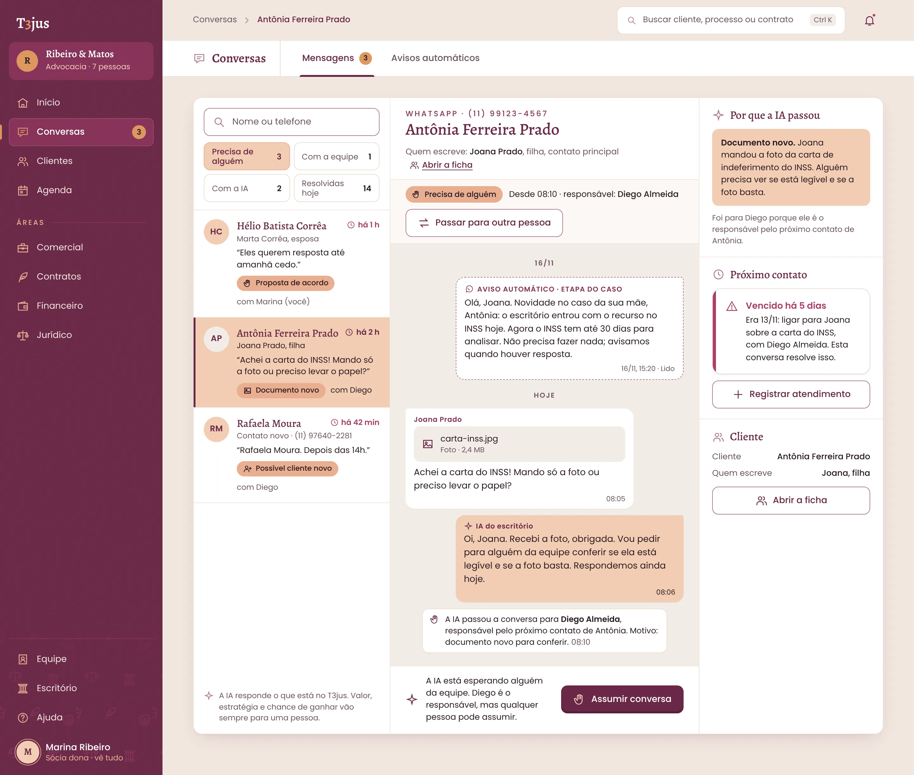
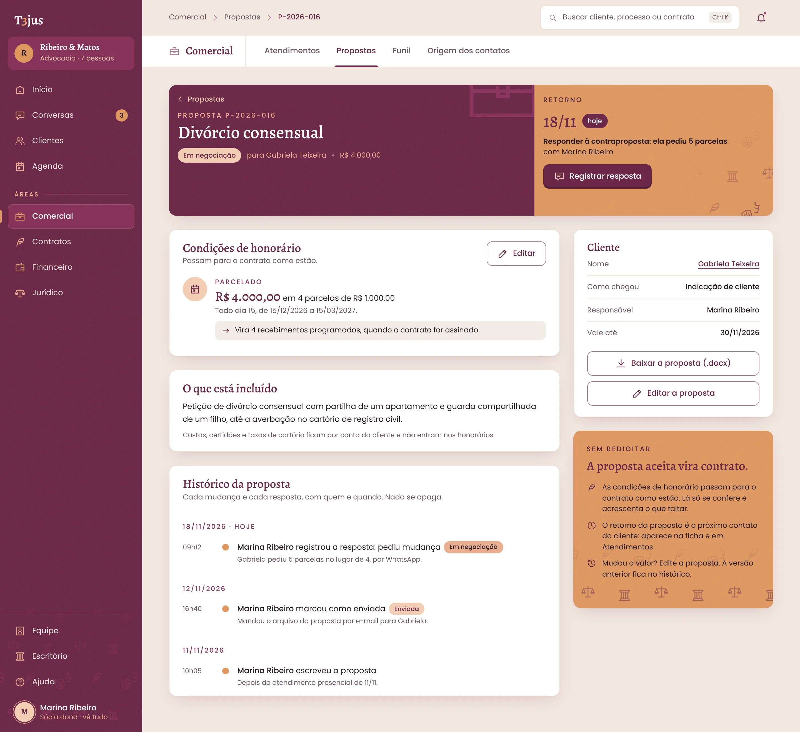
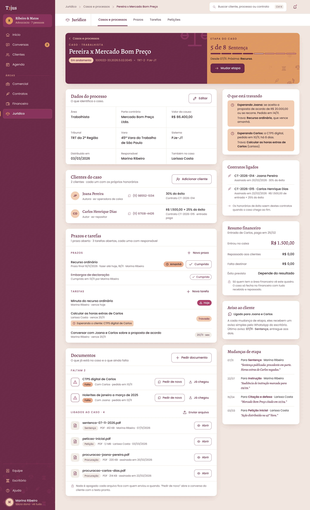

<title>Áreas do Portal T3jus</title>
<meta name="claude:viewport-fit-sides" content="cover">
<link rel="preconnect" href="https://fonts.googleapis.com"><link rel="preconnect" href="https://fonts.gstatic.com" crossorigin>
<link href="https://fonts.googleapis.com/css2?family=Alegreya:ital,wght@0,500;1,500&family=Poppins:wght@400;500&display=swap" rel="stylesheet">
<style>
/* Gabinete: faixa vinho no alto, campo sal, folhas brancas; âmbar só como campo com texto escuro. Aparência única (clara), de propósito. */
:root{
  --vinho:#692746; --vinho-2:#87335B; --vinho-escuro:#4F1D35; --urgencia:#AC3F6B;
  --sal:#F1E6DF; --sal-2:#F2ECE8; --papel:#FFFFFF; --ambar:#DD9760; --ambar-3:#F2CDB3; --rosa:#E9AE90;
  --tinta:#2A1A22; --tinta-2:#6E5562;
  --serifa:Alegreya,Georgia,"Times New Roman",serif; --texto:Poppins,"Segoe UI",system-ui,sans-serif;
  color-scheme:light;
}
*{box-sizing:border-box}
body{margin:0;background:var(--sal);color:var(--tinta);font:15px/1.6 var(--texto)}
.faixa{background:var(--vinho);color:var(--papel)}
.dentro{max-width:1180px;margin:0 auto;padding-left:max(16px,env(safe-area-inset-left,0px));padding-right:max(16px,env(safe-area-inset-right,0px))}
header .dentro{padding-block:44px 36px}
.sobre{margin:0 0 8px;font-size:12px;letter-spacing:.18em;text-transform:uppercase;color:var(--rosa)}
h1,h2,h3{font-family:var(--serifa);font-weight:500;margin:0;text-wrap:balance}
h1{font-size:clamp(32px,5vw,46px);line-height:1.1}
header p.lead{margin:12px 0 0;max-width:68ch;color:var(--ambar-3)}
.fio{width:56px;height:3px;background:var(--ambar);border-radius:2px;margin:18px 0 0}
.numeros{display:flex;flex-wrap:wrap;gap:12px 32px;margin-top:22px}
.numeros div{font-size:13px;color:var(--ambar-3)} .numeros b{display:block;font:500 28px/1.1 var(--serifa);color:var(--papel)}
main .dentro{padding-block:32px 64px}
h2{font-size:30px;color:var(--vinho)} .sub{margin:4px 0 20px;color:var(--tinta-2);max-width:72ch}
.grade{display:grid;grid-template-columns:repeat(auto-fill,minmax(330px,1fr));gap:20px}
.area{background:var(--papel);border-radius:14px;overflow:hidden;display:flex;flex-direction:column;min-width:0}
.area a.foto{display:block;aspect-ratio:16/10;max-width:100%;overflow:hidden;background:var(--sal-2)}
.area img{width:100%;height:100%;object-fit:cover;object-position:top left;display:block}
.corpo{padding:18px 20px 20px;display:flex;flex-direction:column;gap:8px;flex:1}
.corpo h3{font-size:24px;color:var(--vinho)}
.corpo p{margin:0;color:var(--tinta-2);font-size:14px}
.selos{display:flex;flex-wrap:wrap;gap:6px}
.selo{font-size:12px;padding:2px 10px;border-radius:12px;background:var(--sal);color:var(--vinho-escuro)}
.selo.comum{background:var(--ambar-3)}
.abrir{margin-top:auto;padding-top:8px}
.botao{display:inline-flex;align-items:center;gap:8px;min-height:44px;padding:0 18px;border-radius:10px;background:var(--vinho);color:var(--papel);text-decoration:none;font-weight:500}
.botao:hover{background:var(--vinho-2)}
.aprovada{background:var(--ambar);border-radius:14px;padding:20px 22px;margin:0 0 36px;color:var(--vinho-escuro);display:flex;flex-wrap:wrap;gap:12px 24px;align-items:center;justify-content:space-between}
.aprovada p{margin:0;max-width:70ch}
.aprovada a{color:var(--vinho-escuro);font-weight:500}
section+section{margin-top:48px}
.perguntas{display:grid;grid-template-columns:repeat(auto-fill,minmax(330px,1fr));gap:20px}
.bloco{background:var(--papel);border-radius:14px;padding:20px 22px;min-width:0}
.bloco h3{font-size:21px;color:var(--vinho);margin-bottom:10px}
ol{margin:0;padding-left:22px;display:grid;gap:12px}
li{font-size:14px} li b{font-weight:500;color:var(--tinta)}
li span{display:block;color:var(--tinta-2);font-size:13px;margin-top:2px}
li span::before{content:"Recomendo: ";font-weight:500;color:var(--vinho)}
.nota{margin-top:20px;font:italic 500 17px/1.5 var(--serifa);color:var(--tinta-2);max-width:72ch}
a:focus-visible{outline:3px solid var(--urgencia);outline-offset:3px;border-radius:8px}
.faixa a:focus-visible{outline-color:var(--ambar-3)}
@media (prefers-reduced-motion:no-preference){.area{transition:transform .15s} .area:hover{transform:translateY(-2px)}}
</style>

<header class="faixa"><div class="dentro">
  <p class="sobre">T3jus · Portal do advogado · para aprovação da Carol</p>
  <h1>As áreas do Portal</h1>
  <div class="fio"></div>
  <p class="lead">Primeira rodada de desenho, já com os seus 4 ajustes (tipo "Outro" na Agenda, "Mensagens" no lugar de "Caixa", funil novo e mais de um tipo de honorário), de Agenda, Conversas, Comercial, Contratos, Financeiro e Jurídico. Segue o conceito Gabinete, a moldura aprovada e o padrão da área Clientes. Cada tela tem versão de computador e de celular. É só desenho: nada disto foi programado.</p>
  <div class="numeros">
    <div><b>6</b>áreas</div>
    <div><b>83</b>telas desenhadas</div>
    <div><b>166</b>capturas conferidas</div>
    <div><b>20</b>perguntas para você</div>
  </div>
</div></header>

<main><div class="dentro">
  <div class="aprovada">
    <p><b>Clientes já está aprovada</b> e não foi redesenhada. As outras áreas ligam à ficha do cliente do jeito que você aprovou.</p>
    <a href="https://claude.ai/artifact/WrLWnQXFvaid1XhB2Zurci">Ver Clientes aprovada</a>
  </div>

  <section>
    <h2>As telas, área por área</h2>
    <p class="sub">Clique numa área para ver todas as telas dela, com a legenda de cada uma. Em cada tela dá para abrir a versão navegável.</p>
    <div class="grade">
      <article class="area">
        <a class="foto" href="../portal-agenda-conversas/index.html" aria-label="Abrir Agenda"></a>
        <div class="corpo">
          <div class="selos"><span class="selo comum">Comum a todos</span><span class="selo">14 telas</span></div>
          <h3>Agenda</h3>
          <p>Mês, semana e dia; tipos fixos e o tipo "Outro", escrito à mão; audiência presencial ou virtual com link da sala; marcar clicando no dia; lembrete ao cliente pelo WhatsApp. Os prazos do Jurídico só aparecem para quem tem Jurídico. No celular, vira lista do dia e da semana.</p>
          <div class="abrir"><a class="botao" href="../portal-agenda-conversas/index.html">Ver a Agenda</a></div>
        </div>
      </article>
      <article class="area">
        <a class="foto" href="../portal-agenda-conversas/index.html" aria-label="Abrir Conversas"></a>
        <div class="corpo">
          <div class="selos"><span class="selo comum">Comum a todos</span><span class="selo">11 telas</span></div>
          <h3>Conversas</h3>
          <p>A caixa do WhatsApp do escritório. O que a IA resolveu sozinha, o que ela passou para uma pessoa e por quê, assumir e devolver à IA, e os avisos automáticos enviados. Mostra também o escritório que ainda não conectou o número.</p>
          <div class="abrir"><a class="botao" href="../portal-agenda-conversas/index.html">Ver Conversas</a></div>
        </div>
      </article>
      <article class="area">
        <a class="foto" href="../portal-comercial-contratos/index.html" aria-label="Abrir Comercial"></a>
        <div class="corpo">
          <div class="selos"><span class="selo">Área liberada pelo sócio</span><span class="selo">12 telas</span></div>
          <h3>Comercial</h3>
          <p>Quem precisa de retorno no escritório inteiro, propostas com situação e responsável, o funil até o contrato, com quantos passam em cada etapa e por que os outros pararam e de onde vêm os clientes. A proposta aceita vira contrato sem redigitar.</p>
          <div class="abrir"><a class="botao" href="../portal-comercial-contratos/index.html">Ver Comercial</a></div>
        </div>
      </article>
      <article class="area">
        <a class="foto" href="../portal-comercial-contratos/index.html" aria-label="Abrir Contratos"></a>
        <div class="corpo">
          <div class="selos"><span class="selo">Área liberada pelo sócio</span><span class="selo">14 telas</span></div>
          <h3>Contratos</h3>
          <p>Novo contrato em 4 passos: marque quantos dos 7 tipos de honorário quiser no mesmo contrato e o resumo do que ele gera, mês a mês. A base do mês para os percentuais recorrentes, e a procuração gerada com os dados do cliente e a OAB.</p>
          <div class="abrir"><a class="botao" href="../portal-comercial-contratos/index.html">Ver Contratos</a></div>
        </div>
      </article>
      <article class="area">
        <a class="foto" href="../portal-financeiro/index.html" aria-label="Abrir Financeiro"></a>
        <div class="corpo">
          <div class="selos"><span class="selo">Área liberada pelo sócio</span><span class="selo">16 telas</span></div>
          <h3>Financeiro</h3>
          <p>O dinheiro de terceiros nunca divide folha com o do escritório. O que venceu, com o motivo e a próxima ação; registrar recebimento; repasses de RPV e alvará; prestação de contas ao cliente pelo WhatsApp; caixa previsto contra realizado.</p>
          <div class="abrir"><a class="botao" href="../portal-financeiro/index.html">Ver o Financeiro</a></div>
        </div>
      </article>
      <article class="area">
        <a class="foto" href="../portal-juridico/index.html" aria-label="Abrir Jurídico"></a>
        <div class="corpo">
          <div class="selos"><span class="selo">Área liberada pelo sócio</span><span class="selo">16 telas</span></div>
          <h3>Jurídico</h3>
          <p>Lista de casos com número, cliente e etapa; a ficha do caso com o que está travando, prazos, tarefas e documentos que faltam. Mudar etapa pede motivo e mostra o aviso ao cliente; a etapa final pede o resultado e manda o êxito ao Financeiro.</p>
          <div class="abrir"><a class="botao" href="../portal-juridico/index.html">Ver o Jurídico</a></div>
        </div>
      </article>
    </div>
  </section>

  <section>
    <h2>Perguntas para você</h2>
    <p class="sub">Cada uma vem com a recomendação da especialista. Se as recomendações servirem, basta responder "pode seguir as recomendações", e o que for diferente você me diz.</p>
    <div class="perguntas">
      <div class="bloco"><h3>Agenda e Conversas</h3><ol>
        <li><b>Conversas pode ter duas seções, Mensagens e Avisos automáticos?</b><span>sim.</span></li>
        <li><b>Quem vê as conversas?</b><span>a equipe toda vê as Mensagens; os dados do cliente e os avisos seguem as áreas de cada pessoa.</span></li>
        <li><b>Qualquer pessoa pode assumir uma conversa que tem outro responsável?</b><span>sim, com registro na conversa e aviso ao responsável.</span></li>
        <li><b>A sincronização com Google Agenda e Outlook fica só como lugar reservado?</b><span>sim, e perguntar antes à advogada parceira.</span></li>
        <li><b>O lembrete de audiência ao cliente vem ligado, 1 dia e 2 horas antes?</b><span>sim, com como desligar em cada compromisso.</span></li>
      </ol></div>
      <div class="bloco"><h3>Comercial e Contratos</h3><ol>
        <li><b>A programação dos recebimentos vai ao Financeiro ao criar o contrato ou ao registrar a assinatura?</b><span>ao registrar a assinatura.</span></li>
        <li><b>Os modelos de documento são do escritório ou padrão do T3jus?</b><span>os dois: um padrão do T3jus que o escritório pode trocar. A assinatura eletrônica fica só reservada.</span></li>
        <li><b>O lembrete da base do mês pode ir também ao cliente pelo WhatsApp?</b><span>sim, como opção que vem desmarcada.</span></li>
        <li><b>Quem cria e muda contratos?</b><span>quem tem a área Contratos; mudar contrato ativo pede motivo.</span></li>
        <li><b>As notas sobre a publicidade da OAB (Provimento 205/2021) estão certas?</b><span>uma advogada parceira lê antes da aprovação.</span></li>
      </ol></div>
      <div class="bloco"><h3>Financeiro</h3><ol>
        <li><b>O dinheiro de terceiros precisa de conta bancária separada?</b><span>a separação é obrigatória no sistema; a conta separada fica só recomendada.</span></li>
        <li><b>Qual o prazo padrão para repassar ao cliente?</b><span>3 dias úteis, que a sócia dona pode mudar.</span></li>
        <li><b>O escritório pode descontar do levantamento o que o cliente deve?</b><span>só os reembolsos do próprio caso entram sozinhos; parcela atrasada, só com o aceite do cliente registrado.</span></li>
        <li><b>Quem tem Financeiro vê as retiradas dos sócios e os salários?</b><span>hoje vê tudo; restringir à sócia dona só se os pilotos tiverem alguém no financeiro que não é sócio.</span></li>
        <li><b>A divisão de honorários entre sócios (FI-11) e o acompanhamento do levantamento (FI-19) entram já?</b><span>esperar os pilotos.</span></li>
      </ol></div>
      <div class="bloco"><h3>Jurídico</h3><ol>
        <li><b>Uma lista de etapas para o escritório todo ou uma por tipo de caso?</b><span>uma lista só nesta versão.</span></li>
        <li><b>Quem pode mudar a etapa e registrar o resultado final?</b><span>todos com Jurídico; o êxito vai ao Financeiro só "para conferir".</span></li>
        <li><b>O aviso de etapa ao cliente pode sair sem prévia?</b><span>não: vem marcado, sempre com a prévia, e dá para desmarcar.</span></li>
        <li><b>Quem só tem Jurídico vê os honorários?</b><span>não vê valores nem percentuais.</span></li>
        <li><b>Petições fica na barra só com o lugar reservado?</b><span>sim, até os pilotos dizerem se querem o gerador.</span></li>
      </ol></div>
    </div>
    <p class="nota">Nesta rodada ficam de fora alguns estados secundários, como voltar a uma etapa anterior e a janela de nova tarefa. Eles seguem os padrões já desenhados e entram quando cada área for detalhada para o código.</p>
  </section>
</div></main>
